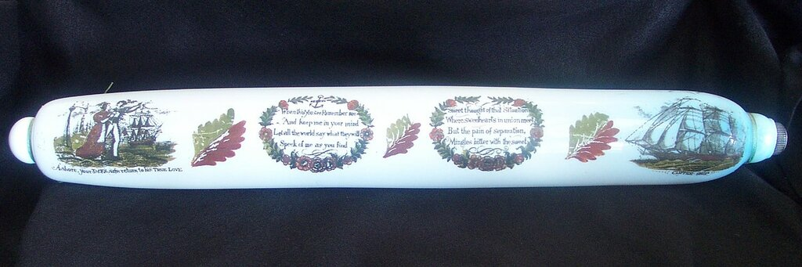

Если ты будешь драться, так я тебя, подлеца, таким образом откатаю, что ты три дня садиться не будешь...
М.Е. Салтыков-Щедрин. Невинные рассказы
На различных сайтах, где идет бойкая торговля сувенирами и безделушками, можно встретить некий гаджет, который называют "фантазийная скалка", "скалка-сувенир". Иногда его можно встретить и на антикварных площадках, специализирующихся на изделиях из викторианского стекла. Это стеклянный или фаянсовый цилиндр с двумя ручками-горлышками на основаниях, иногда расписанный изображениями из морской жизни или нравоучительными надписями опять же на морскую тему.

Вопрос совсем простой: имеют ли эти сувениры в качестве прообраза какой-нибудь реальный гаджет, практически использовавшийся на борту корабля?